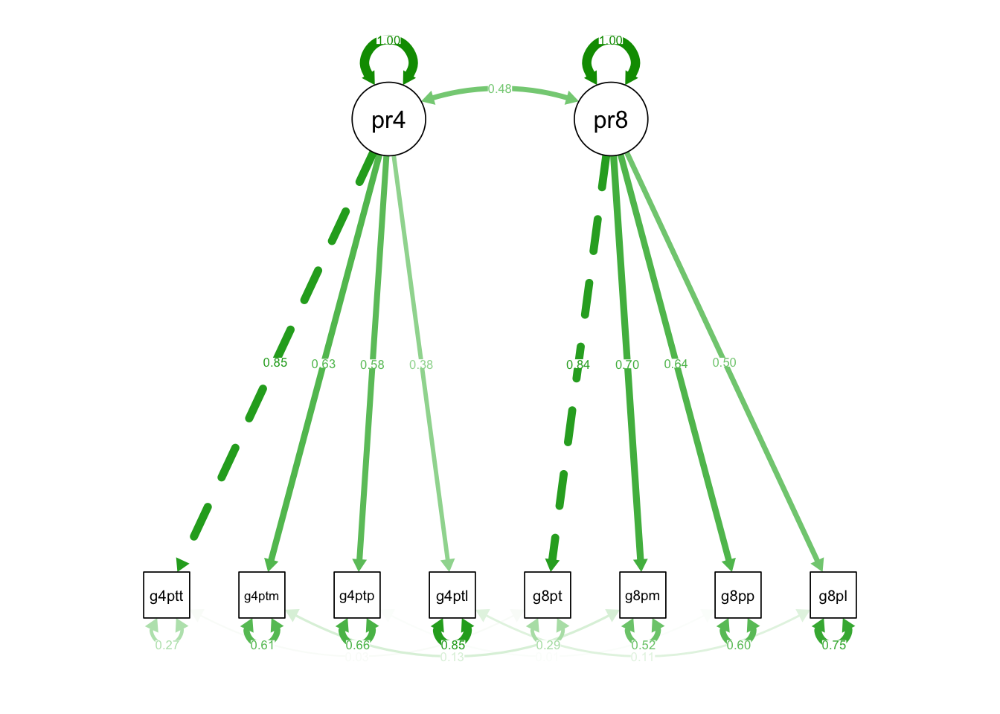

library(lavaan)Warning: package 'lavaan' was built under R version 4.2.3This is lavaan 0.6-17
lavaan is FREE software! Please report any bugs.library(semTools) ###############################################################################This is semTools 0.5-6All users of R (or SEM) are invited to submit functions or ideas for functions.###############################################################################library(semPlot)
library(haven)Warning: package 'haven' was built under R version 4.2.3# read complete data
data_star_selected_variables <- read_spss("data/data_star_selected_variables.sav")
# specify model with same structure at both times
part_configinv_mod <-
"part4e =~ g4ptattn + g4ptmtrl + g4ptpers + g4ptlate
part8e =~ g8peattn + g8pemtrl + g8pepers + g8pelate
# latent (co-)variances
part4e ~~ part4e
part8e ~~ part8e
part4e ~~ part8e
# residual variances
g4ptattn ~~ g4ptattn
g4ptmtrl ~~ g4ptmtrl
g4ptpers ~~ g4ptpers
g4ptlate ~~ g4ptlate
g8peattn ~~ g8peattn
g8pemtrl ~~ g8pemtrl
g8pepers ~~ g8pepers
g8pelate ~~ g8pelate
# set residual covariances free over time per indicator
g4ptattn ~~ g8peattn
g4ptmtrl ~~ g8pemtrl
g4ptpers ~~ g8pepers
g4ptlate ~~ g8pelate
"
# fit the model to the data aka compare modelimplied and
# empirical variance-covariance structure
part_configinv_fit <-
cfa(part_configinv_mod, data = data_star_selected_variables)
semPaths(part_configinv_fit, what="std")
parameterestimates(part_configinv_fit, standardized = T) lhs op rhs est se z pvalue ci.lower ci.upper std.lv
1 part4e =~ g4ptattn 1.000 0.000 NA NA 1.000 1.000 0.783
2 part4e =~ g4ptmtrl 0.927 0.058 16.081 0.000 0.814 1.040 0.726
3 part4e =~ g4ptpers 0.890 0.058 15.251 0.000 0.775 1.004 0.696
4 part4e =~ g4ptlate 0.411 0.039 10.630 0.000 0.335 0.486 0.321
5 part8e =~ g8peattn 1.000 0.000 NA NA 1.000 1.000 0.721
6 part8e =~ g8pemtrl 1.039 0.054 19.362 0.000 0.934 1.145 0.749
7 part8e =~ g8pepers 0.951 0.053 17.991 0.000 0.847 1.054 0.685
8 part8e =~ g8pelate 0.562 0.039 14.419 0.000 0.485 0.638 0.405
9 part4e ~~ part4e 0.612 0.047 13.123 0.000 0.521 0.704 1.000
10 part8e ~~ part8e 0.519 0.037 13.918 0.000 0.446 0.593 1.000
11 part4e ~~ part8e 0.271 0.026 10.567 0.000 0.221 0.321 0.481
12 g4ptattn ~~ g4ptattn 0.226 0.032 7.180 0.000 0.165 0.288 0.226
13 g4ptmtrl ~~ g4ptmtrl 0.812 0.045 17.923 0.000 0.724 0.901 0.812
14 g4ptpers ~~ g4ptpers 0.936 0.049 19.005 0.000 0.839 1.032 0.936
15 g4ptlate ~~ g4ptlate 0.608 0.028 21.532 0.000 0.553 0.663 0.608
16 g8peattn ~~ g8peattn 0.217 0.023 9.619 0.000 0.173 0.261 0.217
17 g8pemtrl ~~ g8pemtrl 0.599 0.035 16.969 0.000 0.530 0.668 0.599
18 g8pepers ~~ g8pepers 0.692 0.037 18.678 0.000 0.620 0.765 0.692
19 g8pelate ~~ g8pelate 0.494 0.024 20.767 0.000 0.447 0.541 0.494
20 g4ptattn ~~ g8peattn 0.006 0.015 0.372 0.710 -0.024 0.035 0.006
21 g4ptmtrl ~~ g8pemtrl 0.093 0.027 3.493 0.000 0.041 0.145 0.093
22 g4ptpers ~~ g8pepers 0.012 0.029 0.415 0.678 -0.045 0.069 0.012
23 g4ptlate ~~ g8pelate 0.058 0.018 3.184 0.001 0.022 0.094 0.058
std.all std.nox
1 0.854 0.854
2 0.627 0.627
3 0.584 0.584
4 0.381 0.381
5 0.840 0.840
6 0.696 0.696
7 0.636 0.636
8 0.499 0.499
9 1.000 1.000
10 1.000 1.000
11 0.481 0.481
12 0.270 0.270
13 0.607 0.607
14 0.659 0.659
15 0.855 0.855
16 0.295 0.295
17 0.516 0.516
18 0.596 0.596
19 0.751 0.751
20 0.025 0.025
21 0.133 0.133
22 0.015 0.015
23 0.106 0.106summary(part_configinv_fit, rsquare = T)lavaan 0.6.17 ended normally after 25 iterations
Estimator ML
Optimization method NLMINB
Number of model parameters 21
Used Total
Number of observations 1013 11601
Model Test User Model:
Test statistic 58.125
Degrees of freedom 15
P-value (Chi-square) 0.000
Parameter Estimates:
Standard errors Standard
Information Expected
Information saturated (h1) model Structured
Latent Variables:
Estimate Std.Err z-value P(>|z|)
part4e =~
g4ptattn 1.000
g4ptmtrl 0.927 0.058 16.081 0.000
g4ptpers 0.890 0.058 15.251 0.000
g4ptlate 0.411 0.039 10.630 0.000
part8e =~
g8peattn 1.000
g8pemtrl 1.039 0.054 19.362 0.000
g8pepers 0.951 0.053 17.991 0.000
g8pelate 0.562 0.039 14.419 0.000
Covariances:
Estimate Std.Err z-value P(>|z|)
part4e ~~
part8e 0.271 0.026 10.567 0.000
.g4ptattn ~~
.g8peattn 0.006 0.015 0.372 0.710
.g4ptmtrl ~~
.g8pemtrl 0.093 0.027 3.493 0.000
.g4ptpers ~~
.g8pepers 0.012 0.029 0.415 0.678
.g4ptlate ~~
.g8pelate 0.058 0.018 3.184 0.001
Variances:
Estimate Std.Err z-value P(>|z|)
part4e 0.612 0.047 13.123 0.000
part8e 0.519 0.037 13.918 0.000
.g4ptattn 0.226 0.032 7.180 0.000
.g4ptmtrl 0.812 0.045 17.923 0.000
.g4ptpers 0.936 0.049 19.005 0.000
.g4ptlate 0.608 0.028 21.532 0.000
.g8peattn 0.217 0.023 9.619 0.000
.g8pemtrl 0.599 0.035 16.969 0.000
.g8pepers 0.692 0.037 18.678 0.000
.g8pelate 0.494 0.024 20.767 0.000
R-Square:
Estimate
g4ptattn 0.730
g4ptmtrl 0.393
g4ptpers 0.341
g4ptlate 0.145
g8peattn 0.705
g8pemtrl 0.484
g8pepers 0.404
g8pelate 0.249